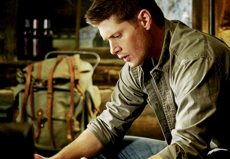
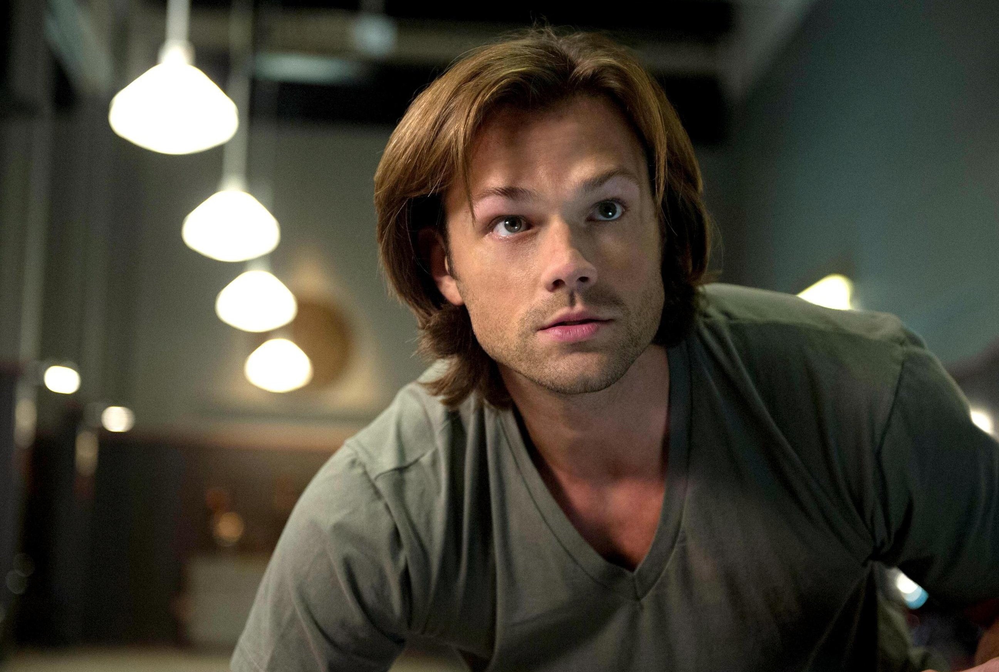
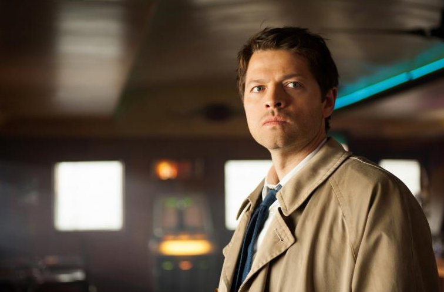
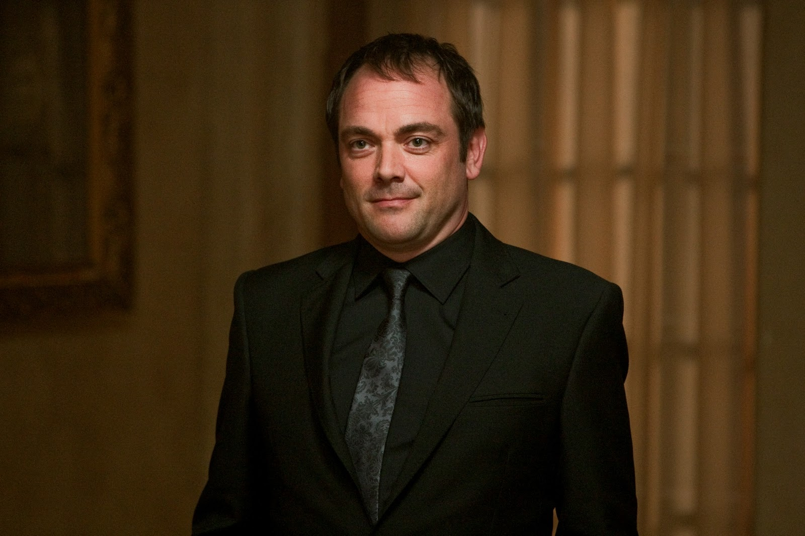

CAST
-

JENSEN ACKLES
Stars as Dean Winchester.
Read More
Jensen Ross Ackles is an American actor and director. He is known for his roles in television as Eric Brady in Days of Our Lives, which earned him several Daytime Emmy Award nominations. He also starred as the lead in the box office success My Bloody Valentine 3D and portrayed Jason Todd in the popular animated film Batman: Under the Red Hood. -

JARED PADALECKI
Stars as Sam Winchester.
Read More
Jared Tristan Padalecki is an American actor. He grew up in Texas and rose to fame in the early 2000s after appearing on the television series Gilmore Girls as well as such films as New York Minute and House of Wax. -

MISHA COLLINS
Stars as Sam Winchester.
Read More
Misha Collins has had recurring roles on ER and 24, and has guest-starred on NCIS, Nip/Tuck, NYPD Blue, CSI, CSI:NY, Monk and Charmed. On the big screen, Misha is most known for his role in a film called "Karla" about a real life serial killer named Paul Bernardo, a film he has openly said he regrets making due to the nature of the real life events the film is based upon. -

MARK SHEPPARD
Stars as Crowley.
Read More
Mark Andreas Sheppard is an English, naturalized American, actor and musician, born in London, England of an Irish-German background.Sheppard is known for his recurring roles as lawyer Romo Lampkin on the Battlestar Galactica reboot, Interpol investigator James Sterling on Leverage, and small-time crime lord Badger on Joss Whedon's Firefly.